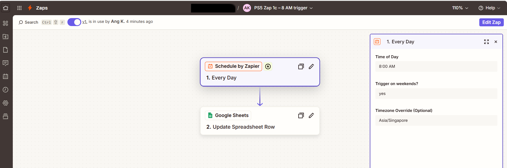
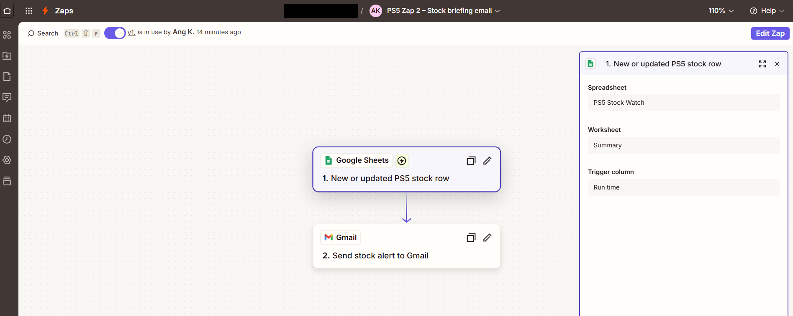
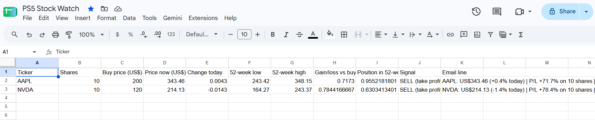
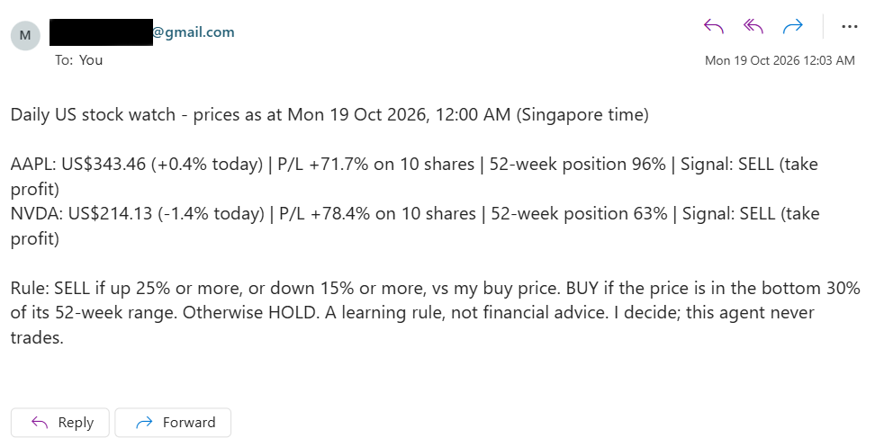
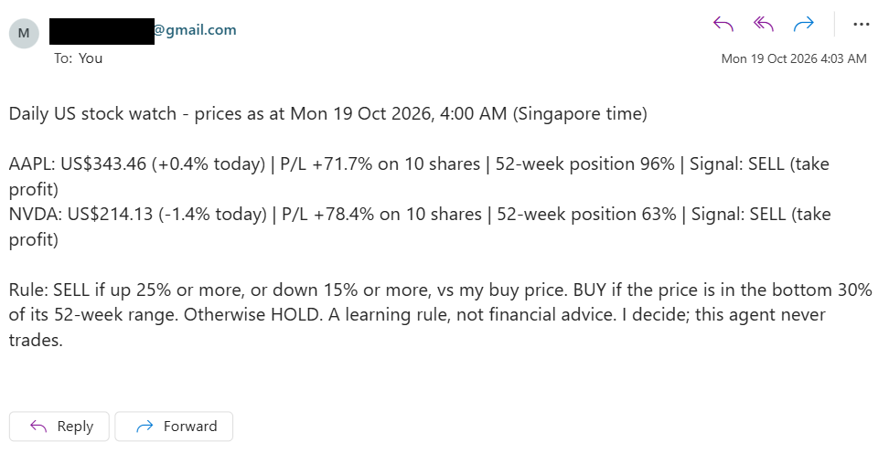
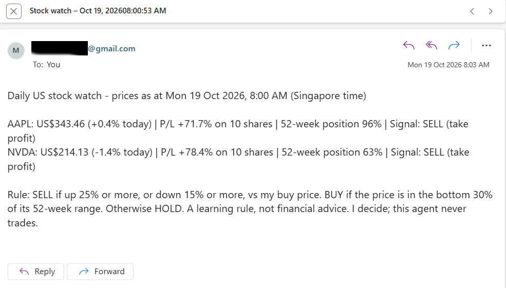
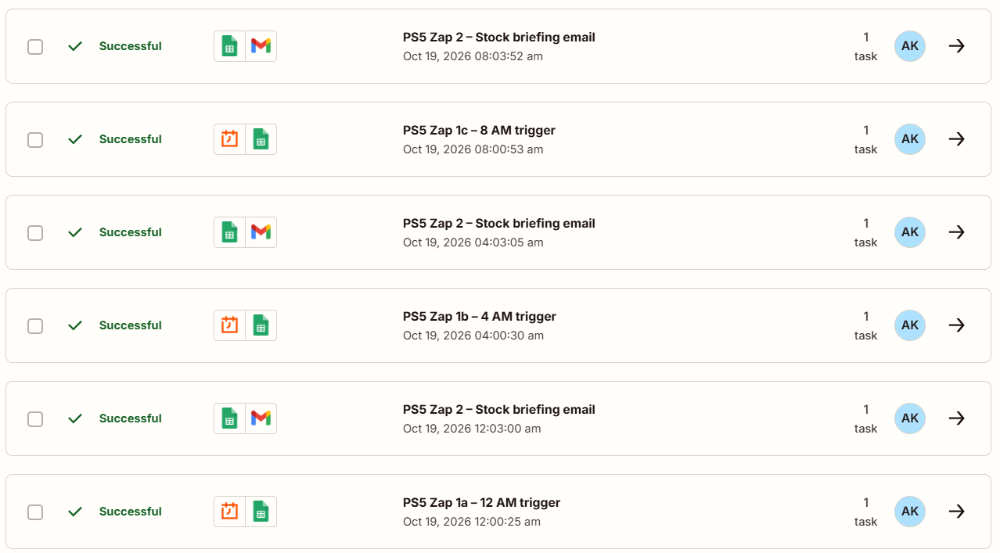
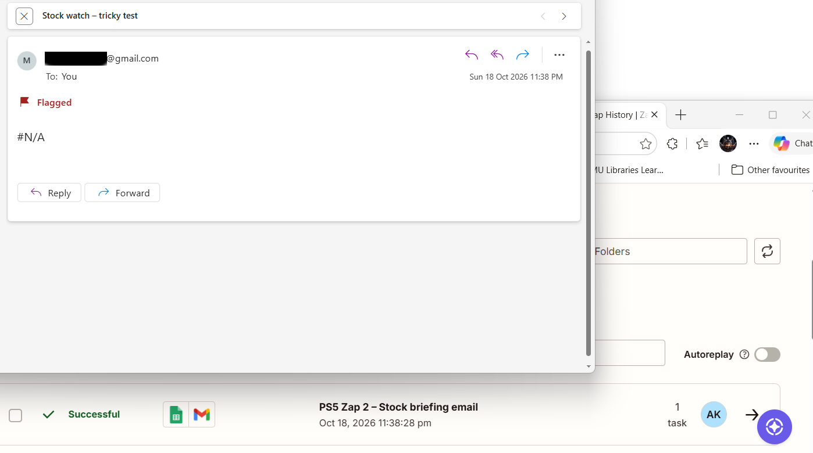
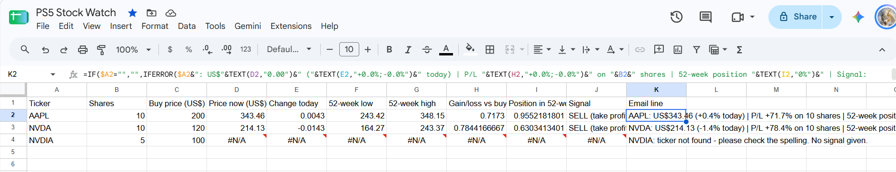
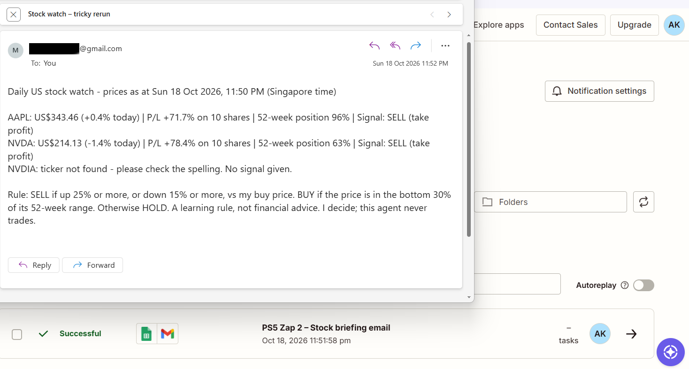

Problem Set 5 · My agent on our map
Each of us designed one task for an AI agent in Week 7. For Problem Set 5 I built one agent of my own, a daily US stock watch that gives a Buy, Sell or Hold signal, and placed it on our map. It is marked with a dashed orange outline.
Click a task card to place it, or Show all. The group placements are our own, for discussion. My PS5 agent is placed when the page opens.
My agent card | Daily US Stock Watch | finished 18 Oct 2026, 10:30 PM SGT 1. The job: Every morning, it tracks the price, today's change and my gain or loss for the US stocks on my watchlist (AAPL and NVDA to start) and gives each one a rule-based Buy, Sell or Hold signal, for me as a retail investor. 2. The trigger: A schedule three times a day in Singapore time: 12:00 AM (midnight, while the US market is open), 4:00 AM (as the US market closes) and 8:00 AM (after the close). Or me typing in the "Run time" cell of my Google Sheet when I want a fresh check. 3. The tools: Schedule by Zapier (Every Day, three Zaps: 12 AM, 4 AM and 8 AM); Google Sheets (Update Spreadsheet Row, and New or Updated Spreadsheet Row) on a sheet that pulls prices with GOOGLEFINANCE; Gmail (Send Email). 4. It must never: place a trade or send my portfolio to anyone else. Setting that stops it: the only action is Gmail "Send Email" with the To field fixed to my own address, and no broker app is connected. 5. Where a person checks: I read the email at breakfast, before the US market opens at 9:30 PM Singapore time, spot-check one price against Google Finance, and decide myself whether to buy, sell or hold in my own broker app.
The Google Sheet is the agent's "brain". The Watchlist tab holds my stocks; I add a stock by typing its ticker in a new row and delete one by clearing its row. GOOGLEFINANCE fills in the price, today's change, and the 52-week low and high. A fixed rule turns these into a signal:
This rule is for learning only and is not financial advice. The two example holdings (10 AAPL at US$200, 10 NVDA at US$120) are made up for this problem set.

Screenshot to add: ps5-zap1.png
Screenshot to add: ps5-zap2.png
Screenshot to add: ps5-sheet.png'">For each run I compared three things: the email I received, the same run in Zap history, and the price on Google Finance. All three scheduled runs fired on time with no help from me. Each time, the alarm-clock Zap ran within a minute of the hour, and Zap 2 sent the email about 3 minutes later (the free plan checks for changes every few minutes). These three runs came after my two test runs on Sunday night (see the tricky case).
| Run | When (SGT) | What the email said | Zap history | My check |
|---|---|---|---|---|
| 1 · Zap 1a | Mon 19 Oct, 12:00 AM. Zap 1a ran 12:00:25 AM; email at 12:03 AM | AAPL US$343.46 (+0.4%), P/L +71.7%, 52-week position 96% → SELL (take profit). NVDA US$214.13 (−1.4%), P/L +78.4%, 52-week position 63% → SELL (take profit). | Zap 1a ✓ Successful (12:00:25 AM) → Zap 2 ✓ Successful (12:03:00 AM), 1 task each | Prices match Google Finance's last close (Fri 16 Oct). Arithmetic checked by hand: AAPL (343.46 − 243.42) ÷ (348.15 − 243.42) = 96% ✓; 343.46 ÷ 200 − 1 = +71.7% ✓; NVDA 214.13 ÷ 120 − 1 = +78.4% ✓. |
| 2 · Zap 1b | Mon 19 Oct, 4:00 AM. Zap 1b ran 4:00:30 AM; email at 4:03 AM | Identical to run 1: AAPL US$343.46 → SELL (take profit); NVDA US$214.13 → SELL (take profit). | Zap 1b ✓ Successful (4:00:30 AM) → Zap 2 ✓ Successful (4:03:05 AM) | Correct but stale: the US market is shut on Sunday (New York time), so the price is still Friday's close. The email gives no sign of this. |
| 3 · Zap 1c | Mon 19 Oct, 8:00 AM. Zap 1c ran 8:00:53 AM; email at 8:03 AM | Identical again: AAPL US$343.46 → SELL (take profit); NVDA US$214.13 → SELL (take profit). | Zap 1c ✓ Successful (8:00:53 AM) → Zap 2 ✓ Successful (8:03:52 AM) | Same stale price. The subject read "Stock watch – Oct 19, 202608:00:53 AM": I had left no space between the Pretty Date and Pretty Time fields, a small formatting slip I noted for the next version. |
What the runs taught me: all four emails, from the 11:50 PM test run to the 8:00 AM run, showed exactly the same prices (AAPL US$343.46, NVDA US$214.13). My agent card assumed that the midnight run would catch the US market "while it is open". But 12:00 AM to 8:00 AM on Monday in Singapore is still Sunday in New York, so the market was closed and every run repeated Friday's closing price. Monday's session only opens at 9:30 PM Singapore time. The agent did nothing wrong: the prices were correct, just not new. However, the email does not tell me they are stale, so a reader could think they are live.

Screenshot to add: ps5-run1.png
Screenshot to add: ps5-run2.png'">
Screenshot to add: ps5-run3.png'">
Screenshot to add: ps5-history.png'">What I tried: I added a misspelled ticker, NVDIA instead of NVDA (5 shares at US$100), as a third stock. A busy investor could easily make this typo when adding a stock. I then triggered a run by typing "tricky test" in the Run time cell.
What I expected beforehand: that only the NVDIA line would be wrong, and the AAPL and NVDA lines would still arrive.
What happened (Sun 18 Oct, 11:38 PM): my prediction was wrong. The whole email body was just "#N/A". One bad ticker broke the joined briefing, so I lost the two good stocks as well. Worse, Zap history marked the run "Successful" (11:38:28 PM, 1 task), because Zapier only checks that an email was sent, not whether what it says makes sense. This failure was silent: nothing warned me except reading the email myself.
The fix: I wrapped the "Email line" formula (column K) in IFERROR, so a ticker that Google Finance cannot find now shows "ticker not found - please check the spelling. No signal given." instead of an error. I copied the fix down to every row, so any future stock is protected too.
The same case, rerun (Sun 18 Oct, 11:52 PM): with NVDIA still in the list, I triggered the same case again ("tricky rerun"). The email now showed AAPL and NVDA correctly, plus a clear warning line: "NVDIA: ticker not found - please check the spelling. No signal given." Zap history showed this run as "Successful" (11:51:58 PM), and this time "Successful" matched a useful email. I then deleted the NVDIA row, so the scheduled runs used only AAPL and NVDA.

Screenshot to add: ps5-tricky-before.png
Screenshot to add: ps5-fix.png'">
Screenshot to add: ps5-tricky-after.png'">A person decides, AI alongside (bottom right).
A right answer, or no single right answer? No single right answer. Half of the job does have a right answer. The price, the gain or loss and the 52-week position are facts I could check by hand: in run 1, AAPL's +71.7% and 96% both worked out exactly. But the job I gave the agent is to recommend Buy, Sell or Hold, and that has no single right answer. In all three runs my rule said SELL (take profit) for both stocks, only because both were more than 25% above my made-up buy prices. Yet the same numbers support other views. AAPL at 96% of its 52-week range is near its high, which a momentum investor would read as strength and a value investor as expensive. A long-term holder who believes in NVIDIA could sensibly hold through a −1.4% day. The rule cannot see my goals, risk appetite, time horizon or taxes, so two reasonable investors can read the same email and act differently.
Must do together, or either can do it alone? Either can do it alone. All three scheduled runs fired, updated the sheet and arrived (12:03, 4:03 and 8:03 AM) while I was asleep, with six "Successful" steps in Zap history, so the agent completes its part with no help from me. I can also make the decision alone by checking Google Finance myself. There is no step in the middle where the agent must stop and wait for me. I come in only at the end, as the decision-maker. This is unlike the top row of the map, where a person has to step in during the process.
Where I stay at the gate, and what I check: I, the investor, read the email at breakfast, before the US market opens at 9:30 PM Singapore time. I check three things: that one price matches Google Finance; that there is no "ticker not found" warning or "#N/A"; and that the prices are not stale, since on weekends and US holidays they repeat the last close. Only then do I decide, and any trade is placed by me in my broker app. My tricky case showed why this gate matters: Zap history said "Successful" for an email that only said "#N/A", so only a person reading the output catches that kind of failure.
What the agent may do alone: read prices, work out gain or loss and the 52-week position, label a signal, and email the briefing to me only. It cannot trade, because no broker is connected, and it cannot email anyone else, because the To field is fixed to my address.
What would move it to another quadrant:
I agree with my group's placement for the task as we designed it. The Finance portfolio summary in AI alone, with checks reports facts "without giving advice", so it is work with a right answer that AI can do alone. My agent answers the first question differently, because I added a recommendation. Once the agent says Buy, Sell or Hold, the work moves from "work with a right answer" to "work with no single right answer", and the agent moves right on the map. This shows that the job, not the topic, decides the quadrant: the same finance data sits in two different quadrants. I agree with the other four placements. If anything, I would ask whether the Careers internship tracker really works alone, since a person must still read the emails it cannot classify.
| What I delegated to AI | What I checked, and how |
|---|---|
| Claude (Cowork) designed the Google Sheet formulas and the Buy/Sell/Hold rule, planned the Zaps, drafted this page's HTML, and drafted my Q1 answer. | I checked the sheet's outputs by hand (for example, AAPL's +71.7% gain and 96% 52-week position) and compared prices with Google Finance. I reread Q1 against my own emails and changed the wording where it did not match what happened. |
| Zapier's Copilot built the Zap steps from my written prompt. | I tested each step before publishing. When "Test trigger" failed, I re-picked the spreadsheet, worksheet and column from the dropdowns, which fixed it. |
| Zapier runs the schedule, updates the sheet and sends the email. | For every run I matched the email's time and text with the same run in Zap history. I read every email myself, because "Successful" does not mean correct. |
AI errors I caught:
Time and cost: about 5 hours in total over Sunday 18 and Monday 19 October: roughly 2 hours to set up the Google Sheet and the four Zaps (including fixing the Copilot error), 1 hour on the tricky case and fix, and 2 hours checking the runs and writing this page. Money: S$0, using the Zapier free plan, a personal test Google account, and the GitHub and Vercel free tiers. Each scheduled run uses 2 Zapier tasks (one per Zap), so three runs a day use 6 of the 100 free tasks a month.
My agent fitted the factual part of the job well: three times a night it fetched prices, worked out my gain or loss and 52-week position correctly, and emailed me without my lifting a finger. It failed silently twice: one mistyped ticker turned the whole email into "#N/A" while Zap history still said "Successful", and weekend runs repeated Friday's prices without saying they were stale, so a green tick in Zap history is not the same as a correct output. Next time, I would keep the IFERROR fix, add a "market closed – last close" note and run only on US trading days, and review the rule's signals against what the stocks actually did each week before trusting them.